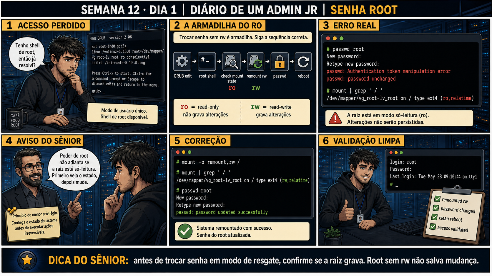

DIARIO DE UM ADMIN JR. | FASE 1 — LINUX, DO BÁSICO AO AVANÇADO
🔗 Conecta com a Semana 11 inteira: Você já sabe editar o GRUB temporariamente, o
que é normal no modo rescue, e como isolate muda estado. Hoje é a primeira aplicação prática real desses
três: recuperar acesso de root quando a senha foi perdida — usando exatamente o fluxo GRUB → shell → passwd.
🔓 Privilégio de hoje: resetar a senha de root com segurança e validação completa.
Você ganha o passo que quase todo iniciante esquece — confirmar que a raiz está montada como rw ANTES de tentar
trocar a senha, porque passwd falha silenciosamente (com erro confuso) se a raiz ainda estiver ro.
Semana 12 · Dia 1 | Nível Júnior
Reset de Senha Root
antes de trocar senha em modo de resgate, confirme se a raiz grava — root sem rw não salva mudança
ANTES DE ALTERAR, OBSERVE. DEPOIS DE ALTERAR, VALIDE.

1. O chamado
"Tenho shell de root, então já resolvi?" — não exatamente. Você editou o GRUB (Semana 11,
Dia 2), chegou numa shell de root em modo de usuário único, e roda passwd root direto. O comando falha:
"Authentication token manipulation error / password unchanged". A raiz ainda está em modo ro.
💡 Passa o mouse nas palavras destacadas pra ver uma dica rápida — clica se quiser a explicação completa com analogia.
2. O sênior te conta
Semana passada, outro ticket
Um admin júnior herdou um servidor de um ex-colega que saiu da empresa sem deixar a senha de root
documentada em lugar nenhum. Ele seguiu o passo óbvio — editou o GRUB, chegou numa shell de root — e
tentou passwd root direto. Deu erro, e o primeiro instinto foi digitar de novo, achando que
tinha errado ao digitar a senha. Errou de novo. Só na terceira tentativa ele parou pra ler a mensagem
inteira em vez de só repetir a ação: "Authentication token manipulation error" não é sobre a senha
escolhida, é sobre o comando não conseguir GRAVAR nada. Um mount | grep ' / ' confirmou:
raiz em ro. Um remount,rw depois, o passwd funcionou de primeira. A correção
não foi "tentar de novo com mais cuidado" — foi parar de repetir a mesma ação e ler o que a mensagem de
erro estava realmente dizendo. O ponto que fica: ter shell de root não significa ter acesso de escrita —
são duas coisas diferentes, e confundir uma com a outra faz você repetir o mesmo comando esperando um
resultado diferente.
3. Decodificador de conceitos
Clica em qualquer termo pra ver a definição completa e uma analogia do dia a dia:
4. Ferramentas e leitura da evidência
Comando
O que observar e por que importa
mount | grep ' / '
Mostra se a raiz está montada como ro ou rw neste momento.
mount -o remount,rw /
Remonta a raiz com permissão de escrita, sem precisar desmontar.
passwd root
Troca a senha de root — só funciona de verdade se a raiz aceitar gravação.
# passwd root
New password:
Retype new password:
passwd: Authentication token manipulation error
passwd: password unchanged
# mount | grep ' / '
/dev/mapper/vg_root-lv_root on / type ext4 (ro,relatime)
--- correção ---
# mount -o remount,rw /
# mount | grep ' / '
/dev/mapper/vg_root-lv_root on / type ext4 (rw,relatime)
# passwd root
New password:
Retype new password:
passwd: password updated successfully
5. Laboratório guiado — marca conforme for testando
Segurança: execute os testes apenas em VM descartável e confirme nomes de discos, hosts e arquivos antes de cada comando.
Ação: entre em modo de usuário único via GRUB (systemd.unit=rescue.target ou init=/bin/bash, conforme o sistema).
(no menu do GRUB, tecla 'e', adicionar ao final da linha linux:)
systemd.unit=rescue.target
(Ctrl+X para inicializar)
Resultado esperado: shell de root disponível, sem pedir senha.
Por quê: modo de usuário único pula a autenticação normal — é exatamente o mecanismo de recuperação para quando a senha foi perdida.
Ação: tente passwd root direto, antes de checar o estado da raiz, e observe o erro.
# passwd root
New password:
Retype new password:
passwd: Authentication token manipulation error
passwd: password unchanged
Ação: rode mount | grep ' / ' e confirme que a raiz está ro.
# mount | grep ' / '
/dev/mapper/vg_root-lv_root on / type ext4 (ro,relatime)
Resultado esperado: saída mostrando (ro,relatime) ou similar.
Cilada comum: ver o erro do passwd e tentar de novo com outra senha, achando que o problema é a senha escolhida — o erro é sobre gravação, não sobre a senha em si.
🧑🏫 Aqui entra o Mentor (em breve): se a raiz já aparecer como rw e passwd ainda falhar, este é o ponto onde o chat com o Sênior-IA vai ajudar a investigar outra causa.
Ação: rode mount -o remount,rw / e confirme com mount | grep ' / ' de novo.
# mount -o remount,rw /
# mount | grep ' / '
/dev/mapper/vg_root-lv_root on / type ext4 (rw,relatime)
Ação: rode passwd root, reinicie normalmente e valide o login com a nova senha.
# passwd root
New password:
Retype new password:
passwd: password updated successfully
# reboot
Resultado esperado: login limpo com a nova senha, reproduzindo o painel 6 da prancha de hoje.
6. Antes de ver as opções — tenta responder
🧠 Recall ativo: por que passwd root falha com "Authentication token manipulation error" logo após
entrar via GRUB em modo de usuário único?
Nesse ponto, a raiz frequentemente está montada como
ro (read-only).
passwd precisa escrever em /etc/shadow, e sem
rw (read-write),
a gravação falha. É preciso rodar
mount -o remount,rw /
antes de tentar trocar a senha.
QUESTÃO 1 de 3
7. Questão comentada — clica numa alternativa
passwd root falhou com "Authentication token manipulation error / password
unchanged" logo após você entrar via GRUB em modo de usuário único. Qual é a causa mais provável e a
correção correta?
💡 Analogia do Sênior para Fixar: O procedimento de 'init=/bin/sh' ou 'rd.break' no GRUB é o chaveiro arrombando a porta do cofre na presença do dono: permite redefinir a senha do root quando ela foi perdida.
QUESTÃO 2 de 3 — cenário de erro real
7.1 A senha foi trocada com sucesso. Você quer confirmar que o acesso realmente funciona antes de encerrar
O painel 6 da prancha de hoje mostra um login limpo, validando o acesso.
Por que validar o login (não só confiar na mensagem "password updated
successfully") é parte necessária do procedimento?
💡 Analogia do Sênior para Fixar: O comando 'passwd root' executado após remontar a raiz em modo RW grava o novo hash no /etc/shadow com segurança criptográfica renovada.
QUESTÃO 3 de 3 — detalhe que confunde todo iniciante
7.2 "mount -o remount,rw / é uma operação arriscada, tipo formatação?"
Um colega hesita em rodar o remount, achando que pode apagar dados no processo.
Isso é verdade?
💡 Analogia do Sênior para Fixar: O comando 'touch /.autorelabel' em sistemas com SELinux é como avisar os guardas sobre a nova chave: força a reindexação dos rótulos de segurança no próximo boot.
8. Procedimento profissional
Entre em modo de usuário único via edição temporária do GRUB (Semana 11, Dia 2).
Antes de passwd, confirme o estado da raiz com mount | grep ' / '.
Se estiver ro, rode mount -o remount,rw / e confirme de novo.
Rode passwd root e confirme a mensagem de sucesso.
Reinicie e valide o login real antes de considerar o procedimento concluído.
Prevenção
Adicione "verificar mount | grep ' / ' antes de passwd" como primeira linha de qualquer
runbook de reset de senha root — é um único comando que evita o loop de "tentar de novo com outra senha"
quando o problema real nunca foi a senha. Documente também credenciais de acesso em local seguro e
centralizado ao desligamento de qualquer colaborador, para que este cenário de "senha perdida" seja cada
vez mais raro.
9. Validação e encerramento
O estado da raiz (ro/rw) foi confirmado antes de tentar passwd.
remount rw foi aplicado quando necessário, sem desmontar nada.
passwd root retornou a mensagem de sucesso.
O acesso foi validado com um login real após reboot, não só a mensagem do comando.
Rollback e limites
mount -o remount,rw / não é destrutivo e não precisa de rollback. Se algo der
errado após a troca de senha (login ainda falhando), o mesmo fluxo GRUB → shell → checagem de mount pode ser
repetido — nada foi perdido no processo.
💡 Sobre repetição espaçada: "confirme o estado antes de agir" conecta com o
Dia 1 desta semana (mapear o boot antes de mudar) e com a Semana 3 (ver antes de apagar) — a mesma disciplina,
agora aplicada a permissões de montagem. O Anki vai conectar os três.
10. Resposta final
Alternativa correta: A. Nesta aula, a causa correta foi raiz montada
como ro, exigindo mount -o remount,rw / antes de passwd root funcionar. O ponto central do caso é este:
antes de trocar senha em modo de resgate, confirme se a raiz grava — root sem rw não salva mudança.
🔓 O que você desbloqueou hoje
Capacidade de resetar a senha de root com segurança, incluindo a validação
completa do acesso. Amanhã você investiga um cenário mais complexo: um fstab quebrado que trava o boot
inteiro antes mesmo de chegar no login.